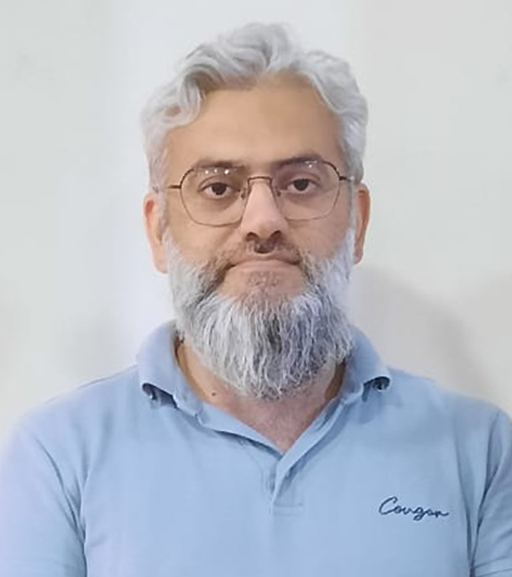

AI & Innovation Strategy Consultant | Artificial Intelligence | Digital Transformation
Islamabad, Pakistan
🌐 Languages: English | Urdu | Pashto
Artificial intelligence and digital transformation specialist with over 10 years of combined academic, research, and industry consulting experience. Expertise in developing applied AI solutions, advising on technology adoption, and translating research innovations into deployable systems for organizations.
Experienced in machine learning, computer vision, predictive analytics, and intelligent automation, with a strong track record of leading AI development projects across healthcare, manufacturing, and intelligent monitoring systems. Proven ability to guide multidisciplinary teams, deliver technical strategy, and support organizations in building AI capability and innovation capacity.
April 2022 – Present
Lead the development and deployment of applied artificial intelligence solutions for enterprise and industrial applications.
April 2022 – Present
June 2020 – February 2022
Developed deep learning-based computer vision systems for multi-object tracking and video analytics.
November 2019 – April 2020
2016 – 2019
2009 – 2012
2015 – 2016
2004 – 2006
Murdoch University, Perth, Australia (2016 – 2021)
Research: Machine Learning for Crowd Image Analysis
Pohang University of Science and Technology (POSTECH), South Korea (2007 – 2009)
Research: Controller design for Plasma display Panel
National University of Sciences and Technology, EME College, Pakistan (2001 – 2004)
Automated document layout analysis system combining OCR, classification models, and deep learning techniques for enterprise document processing.
Computer vision solution for automated disease detection from urine strip images using machine learning classification models.
Deep learning-based system for detecting and monitoring trucks and vehicles from highway video streams.
Genetic algorithm-based scheduling optimization system for textile manufacturing operations.
Object / people tracking system for video surveillance across multiple camera feeds, detecting attributes and tracking throughout video.
PhD research applying machine learning techniques for crowd density estimation and behavior analysis.
Haptic feedback system designed to assist in physical rehabilitation exercises.
Author of multiple peer-reviewed publications in artificial intelligence, computer vision, and deep learning.
View my complete publication list on my Google Scholar Profile.
© 2026 Dr. Yasir Jan. All rights reserved.